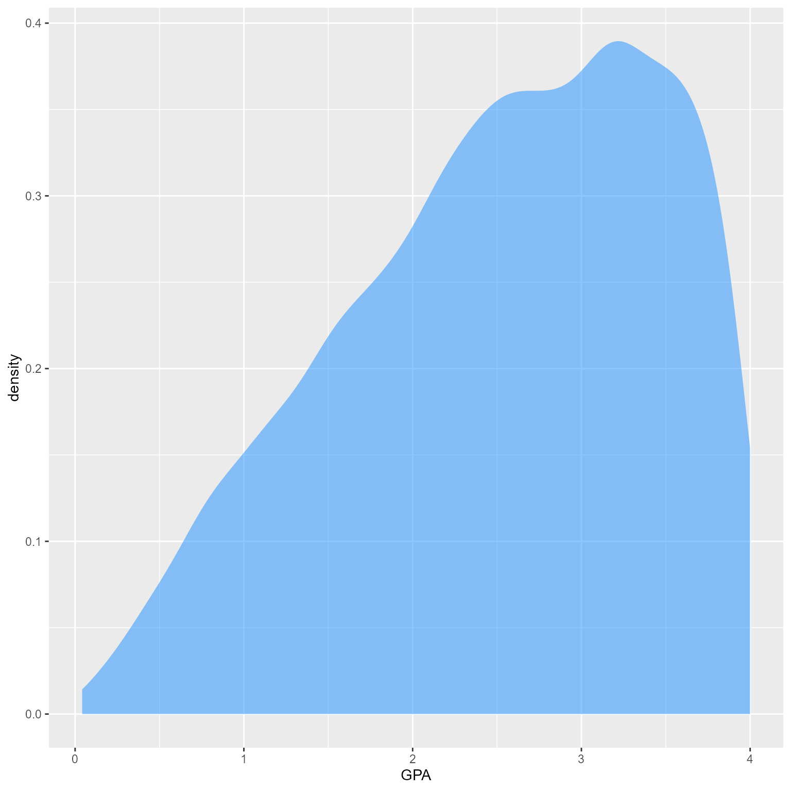
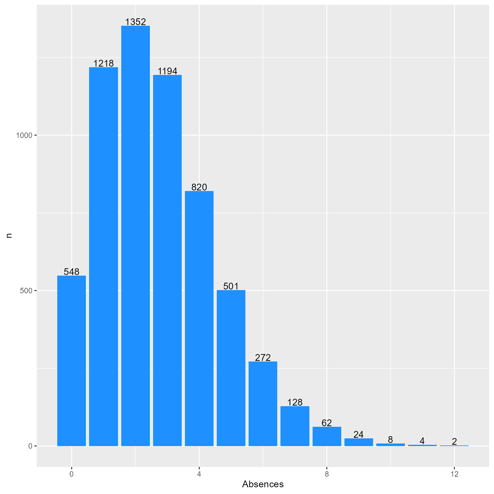
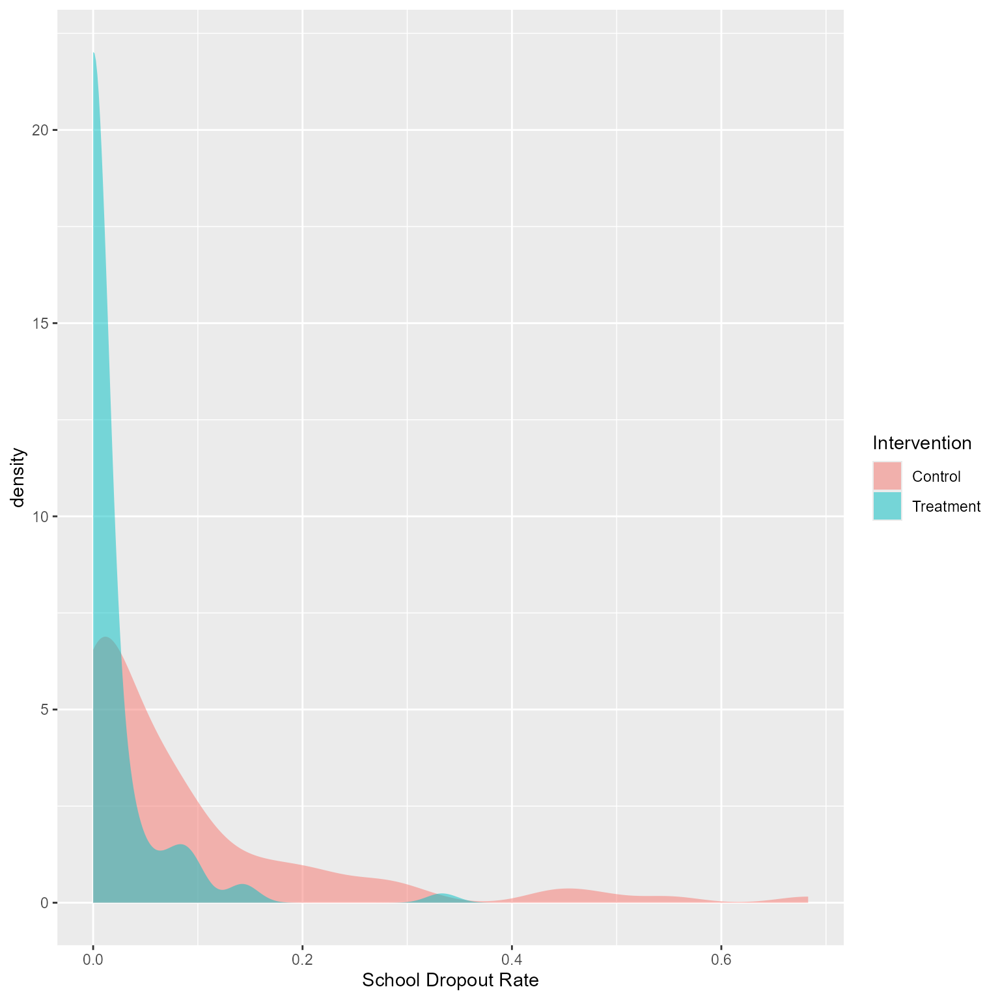
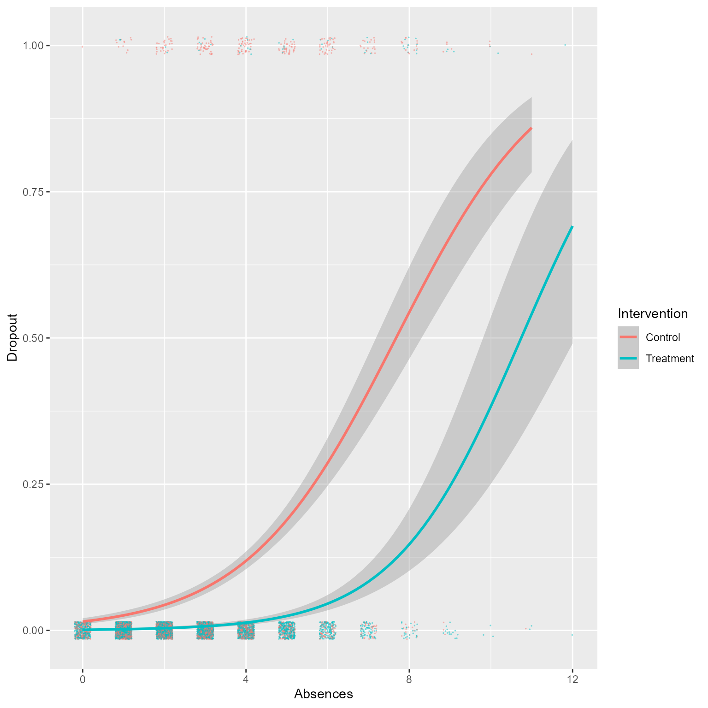
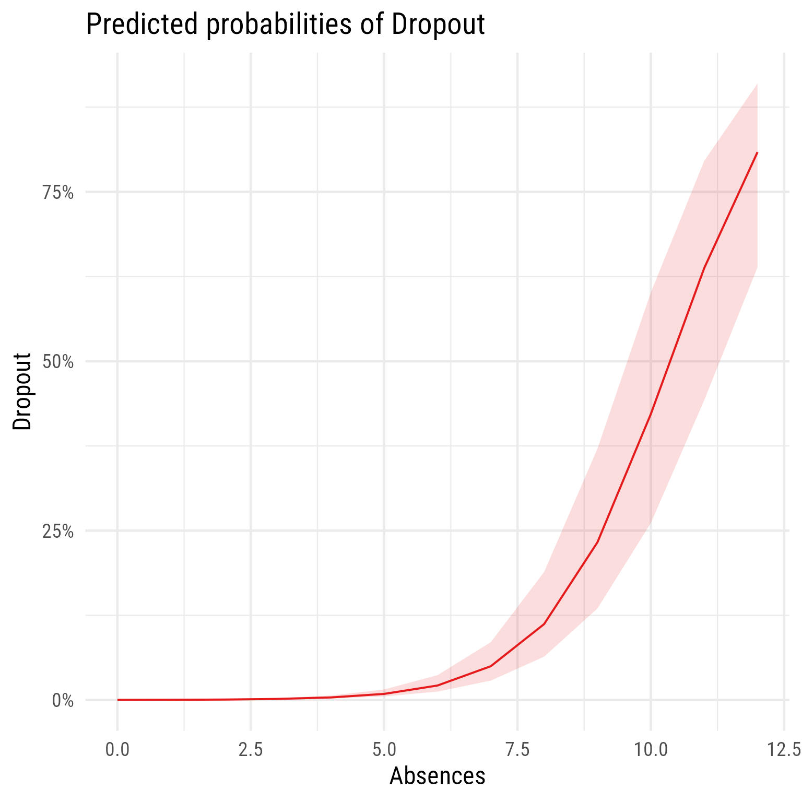

d <- read_csv("https://github.com/wjschne/EDUC5529/raw/master/hw7_dropout.csv")Some outcome variables are incompatible with the general linear model’s normality assumption. Binary outcomes cannot possibly have normally distributed error terms. Generalized linear models allow us to predict outcomes that have non-normal errors. If you know how to analyze linear mixed models, and you understand generalized linear models, generalized linear mixed models require very little additional learning to get started.
A generalized linear model has one or more random response (outcome) variables \((\boldsymbol{Y})\), one or predictor variables \(X\) that are combined optimally using a set of coefficients \(B\), and a link function, \(g\), that specifies the relationship between the predictors and the expected value of the response variables conditioned on the predictor variables:
\[ g\left(\mathcal{E}\left(\boldsymbol{Y}|\boldsymbol{XB}\right)\right)=\boldsymbol{XB} \] The inverse of the link function \(g\) (i.e., \(g^{-1}\)) is called the mean function because it transforms the linear combination of the predictors to the expected value (i.e., the mean) of the response variable.
\[ \mathcal{E}\left(\boldsymbol{Y}|\boldsymbol{XB}\right)=g^{-1}\left(\boldsymbol{XB}\right) \]
The generalized linear mixed model is very similar to the generalized linear model, except that it adds a random component:
\[ \mathcal{E}\left(\boldsymbol{Y}|\boldsymbol{XB}\right)=g^{-1}\left(\boldsymbol{XB}+\boldsymbol{Zv\left(u\right)}\right) \]
Where \(Z\) is the model matrix for random effects, \(u\) is a random component following a distribution conjugate to a generalized linear model family of distributions with parameters \(\lambda\), and \(v()\) is a monotone function.
Let’s imagine we are predicting student dropout rates using student absences and student GPA as predictors. Suppose in 200 schools we conduct an intervention study to see if a school-wide intervention prevents dropout. Schools were randomly assigned to a treatment or control condition. We want to know if our intervention has succeeded, controlling for student absence and GPA.
Import data
Exploratory Analyses
The skim function from the skimr package gives a great overview of what the data looks like. It is fantastic for making sure the data look like they are supposed to. Unfortunately, it does not print well to rmarkdown. The describe function from the psych package is also great.
skimr::skim(d)| Name | d |
| Number of rows | 6133 |
| Number of columns | 5 |
| _______________________ | |
| Column type frequency: | |
| character | 1 |
| numeric | 4 |
| ________________________ | |
| Group variables | None |
Data summary
Variable type: character
| skim_variable | n_missing | complete_rate | min | max | empty | n_unique | whitespace |
|---|---|---|---|---|---|---|---|
| Intervention | 0 | 1 | 7 | 9 | 0 | 2 | 0 |
Variable type: numeric
| skim_variable | n_missing | complete_rate | mean | sd | p0 | p25 | p50 | p75 | p100 | hist |
|---|---|---|---|---|---|---|---|---|---|---|
| school_id | 0 | 1 | 100.68 | 57.49 | 1.00 | 52.00 | 101.00 | 151.00 | 200 | ▇▇▇▇▇ |
| GPA | 0 | 1 | 2.51 | 0.94 | 0.04 | 1.83 | 2.61 | 3.28 | 4 | ▂▃▆▇▇ |
| Absences | 0 | 1 | 2.72 | 1.86 | 0.00 | 1.00 | 2.00 | 4.00 | 12 | ▇▅▂▁▁ |
| Dropout | 0 | 1 | 0.05 | 0.21 | 0.00 | 0.00 | 0.00 | 0.00 | 1 | ▇▁▁▁▁ |
psych::describe(d) vars n mean sd median trimmed mad min max range skew
school_id 1 6133 100.68 57.49 101.00 100.70 72.65 1.00 200 199.00 0.00
Intervention* 2 6133 1.57 0.49 2.00 1.59 0.00 1.00 2 1.00 -0.29
GPA 3 6133 2.51 0.94 2.61 2.57 1.06 0.04 4 3.96 -0.42
Absences 4 6133 2.72 1.86 2.00 2.58 1.48 0.00 12 12.00 0.80
Dropout 5 6133 0.05 0.21 0.00 0.00 0.00 0.00 1 1.00 4.29
kurtosis se
school_id -1.19 0.73
Intervention* -1.92 0.01
GPA -0.71 0.01
Absences 0.72 0.02
Dropout 16.41 0.00What is the distribution of GPA?
d %>%
ggplot(aes(GPA)) +
geom_density(fill = "dodgerblue", color = NA, alpha = 0.5)
What is the distribution of Absences?
d %>%
count(Absences) %>%
ggplot(aes(Absences, n)) +
geom_col(fill = "dodgerblue", color = NA) +
geom_text(aes(label = n), vjust = -.1)
Dropout Rates Across Schools
d %>%
group_by(school_id, Intervention) %>%
summarise(Dropout = mean(Dropout)) %>%
ggplot(aes(Dropout)) +
geom_density(aes(fill = Intervention), color = NA, alpha = 0.5) +
labs(x = "School Dropout Rate")
Let’s use the “glm” method in geom_smooth to get a rough sense of what a proper analysis is likely to show.
ggplot(d, aes(Absences, Dropout)) +
geom_jitter(aes(color = Intervention),
size = 0.3,
width = 0.2,
height = .015,
alpha = 0.5,
pch = 16) +
geom_smooth(aes(color = Intervention),
method = "glm",
method.args = list(family = "binomial"))
To me, that looks like a successful intervention! However, we did not do a proper analysis that accounted for the multilevel nature of the data.
Null model
The glmer function works exactly like lmer except that we must tell it which kind of generalized model we want. With binary outcomes, specify the binomial family. By default, it will do a logistic regression. You can specify probit regression with binomial(link = "probit"), if needed.
m0 <- glmer(Dropout ~ 1 + (1 | school_id), d, family = binomial())
summary(m0)Generalized linear mixed model fit by maximum likelihood (Laplace
Approximation) [glmerMod]
Family: binomial ( logit )
Formula: Dropout ~ 1 + (1 | school_id)
Data: d
AIC BIC logLik deviance df.resid
1827 1841 -912 1823 6131
Scaled residuals:
Min 1Q Median 3Q Max
-1.375 -0.167 -0.070 -0.068 7.498
Random effects:
Groups Name Variance Std.Dev.
school_id (Intercept) 4.46 2.11
Number of obs: 6133, groups: school_id, 200
Fixed effects:
Estimate Std. Error z value Pr(>|z|)
(Intercept) -4.670 0.272 -17.2 <2e-16 ***
---
Signif. codes: 0 '***' 0.001 '**' 0.01 '*' 0.05 '.' 0.1 ' ' 1performance(m0)# Indices of model performance
AIC | AICc | BIC | R2 (cond.) | R2 (marg.) | ICC | RMSE
------------------------------------------------------------------------
1827.186 | 1827.188 | 1840.629 | 0.576 | 0.000 | 0.576 | 0.185
AIC | Sigma | Log_loss | Score_log | Score_spherical
---------------------------------------------------------
1827.186 | 1.000 | 0.121 | -14.611 | 0.010tab_model(m0)| Dropout | |||
|---|---|---|---|
| Predictors | Odds Ratios | CI | p |
| (Intercept) | 0.01 | 0.01 – 0.02 | <0.001 |
| Random Effects | |||
| σ2 | 3.29 | ||
| τ00 school_id | 4.46 | ||
| ICC | 0.58 | ||
| N school_id | 200 | ||
| Observations | 6133 | ||
| Marginal R2 / Conditional R2 | 0.000 / 0.576 | ||
# If you want the raw coefficients (log-odds) instead of odds ratios
tab_model(m0, transform = NULL)| Dropout | |||
|---|---|---|---|
| Predictors | Log-Odds | CI | p |
| (Intercept) | -4.67 | -5.20 – -4.14 | <0.001 |
| Random Effects | |||
| σ2 | 3.29 | ||
| τ00 school_id | 4.46 | ||
| ICC | 0.58 | ||
| N school_id | 200 | ||
| Observations | 6133 | ||
| Marginal R2 / Conditional R2 | 0.000 / 0.576 | ||
We can see from the ICC (or conditional R2) that 57.6% of the variance in dropout rate is explained by the grouping variable, school_id.
First L1 predictor: Absences
Let’s add to the null model using the update function.
m1 <- update(m0, . ~ . + Absences)
# Does this model fit better than the null model?
anova(m0,m1)Data: d
Models:
m0: Dropout ~ 1 + (1 | school_id)
m1: Dropout ~ (1 | school_id) + Absences
npar AIC BIC logLik deviance Chisq Df Pr(>Chisq)
m0 2 1827 1841 -912 1823
m1 3 1371 1391 -682 1365 459 1 <2e-16 ***
---
Signif. codes: 0 '***' 0.001 '**' 0.01 '*' 0.05 '.' 0.1 ' ' 1# Overall numbers
summary(m1)Generalized linear mixed model fit by maximum likelihood (Laplace
Approximation) [glmerMod]
Family: binomial ( logit )
Formula: Dropout ~ (1 | school_id) + Absences
Data: d
AIC BIC logLik deviance df.resid
1370 1391 -682 1364 6130
Scaled residuals:
Min 1Q Median 3Q Max
-6.212 -0.097 -0.033 -0.015 17.443
Random effects:
Groups Name Variance Std.Dev.
school_id (Intercept) 9.59 3.1
Number of obs: 6133, groups: school_id, 200
Fixed effects:
Estimate Std. Error z value Pr(>|z|)
(Intercept) -9.0916 0.5889 -15.4 <2e-16 ***
Absences 0.8777 0.0537 16.4 <2e-16 ***
---
Signif. codes: 0 '***' 0.001 '**' 0.01 '*' 0.05 '.' 0.1 ' ' 1
Correlation of Fixed Effects:
(Intr)
Absences -0.687# Performance metrics
performance(m1)# Indices of model performance
AIC | AICc | BIC | R2 (cond.) | R2 (marg.) | ICC | RMSE
------------------------------------------------------------------------
1370.510 | 1370.514 | 1390.674 | 0.788 | 0.171 | 0.745 | 0.152
AIC | Sigma | Log_loss | Score_log | Score_spherical
---------------------------------------------------------
1370.510 | 1.000 | 0.080 | -Inf | 0.010# Automated report
report(m1)We fitted a logistic mixed model (estimated using ML and Nelder-Mead optimizer)
to predict Dropout with Absences (formula: Dropout ~ Absences). The model
included school_id as random effect (formula: ~1 | school_id). The model's
total explanatory power is substantial (conditional R2 = 0.79) and the part
related to the fixed effects alone (marginal R2) is of 0.17. The model's
intercept, corresponding to Absences = 0, is at -9.09 (95% CI [-10.25, -7.94],
p < .001). Within this model:
- The effect of Absences is statistically significant and positive (beta =
0.88, 95% CI [0.77, 0.98], p < .001; Std. beta = 1.63, 95% CI [1.44, 1.83])
Standardized parameters were obtained by fitting the model on a standardized
version of the dataset. 95% Confidence Intervals (CIs) and p-values were
computed using a Wald z-distribution approximation.# Nice table
tab_model(m1)| Dropout | |||
|---|---|---|---|
| Predictors | Odds Ratios | CI | p |
| (Intercept) | 0.00 | 0.00 – 0.00 | <0.001 |
| Absences | 2.41 | 2.17 – 2.67 | <0.001 |
| Random Effects | |||
| σ2 | 3.29 | ||
| τ00 school_id | 9.59 | ||
| ICC | 0.74 | ||
| N school_id | 200 | ||
| Observations | 6133 | ||
| Marginal R2 / Conditional R2 | 0.171 / 0.788 | ||
# Fixed effect plot
sjPlot::plot_model(m1, type = "pred", terms = "Absences")
Second L1 predictor: GPA
NoteQuestion 1
Add the GPA variable as a predictor to a model called m2. Conduct and interpret your analyses, documenting whether the GPA is a significant predictor of dropout rate.
This plot might aid interpretation.
sjPlot::plot_model(m2,
type = "pred",
terms = c("Absences",
"GPA [0,2,4]"))L2 predictor: Intervention
NoteQuestion 2
Add the Intervention variable as a predictor to a model called m3. Conduct and interpret your analyses, documenting whether the intervention succeeded in reducing the dropout rate.
This plot might aid interpretation.
sjPlot::plot_model(m3,
type = "pred",
terms = c("Absences",
"GPA [0,2,4]",
"Intervention"))
NoteQuestion 3
What additional analyses might you conduct with these data? Try testing at least one more model that makes sense to you and write your conclusions.